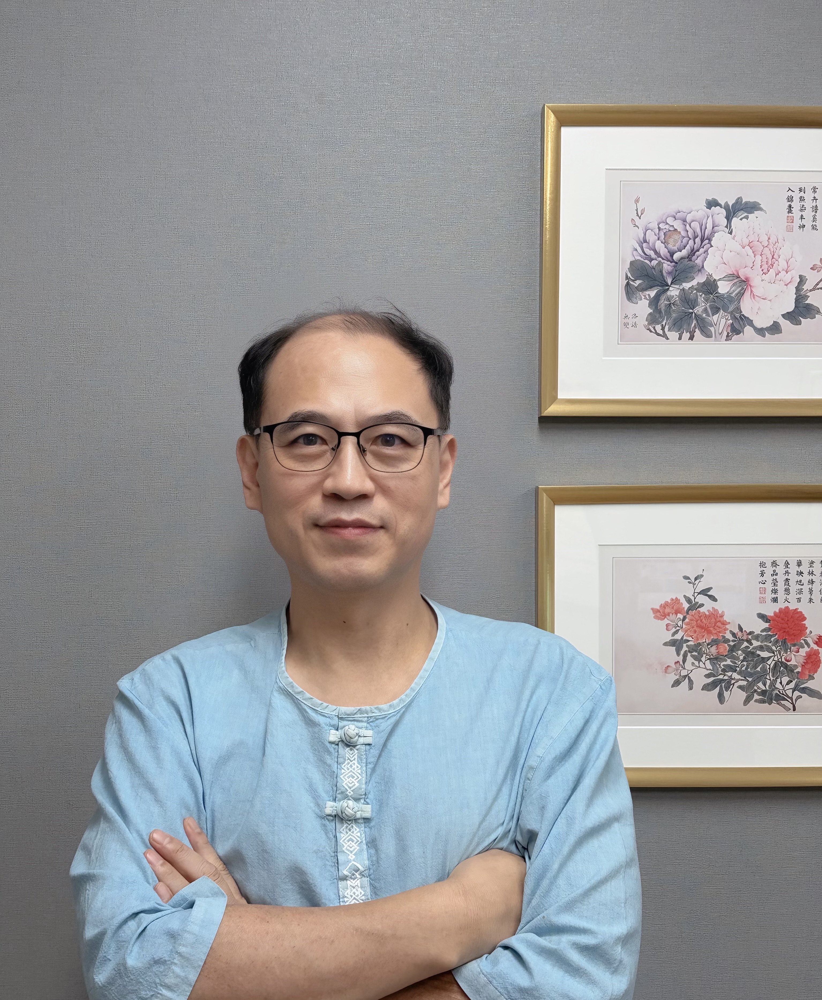

정통 한의학과 첨단 진단 기기의 만남
초음파 진단을 통한 정확한 원인 파악과 정성 어린 진료로 환자분의 건강한 내일을 약속합니다.

안녕하세요. 일산 우성한의원 대표원장입니다.
환자분의 아픔에 깊이 공감하며, 초음파 등 첨단 기기를 활용한 정확한 진단과 정성 어린 한방 치료로 바른 건강을 되찾아 드리겠습니다. 환자를 가족처럼 생각하면 편안하게 진료받을 수 있도록 최선을 다하겠습니다.
초음파 기기를 활용한 정확한 진단으로 목, 어깨, 허리, 관절 등의 만성 통증과 디스크 질환을 치료합니다.
기능성 소화불량, 역류성 식도염, 과민성 대장 증후군 등 잘 낫지 않는 만성 위장 질환의 근본 원인을 다스립니다.
월경통, 생리불순, 갱년기 증후군, 산후풍 등 여성 고유의 질환을 따뜻하고 세심하게 치료합니다.
성장판 초음파 검사를 통해 아이의 예상 키를 과학적으로 예측하고, 잦은 감기나 비염 등 약해진 면역력을 보강하여 바른 성장을 돕습니다.
학업 스트레스로 인한 만성 피로와 집중력 저하를 개선하여 최상의 컨디션을 유지하도록 돕습니다.
개인별 체질에 맞춘 건강한 한약과 치료를 통해 요요 현상을 최소화하고 효과적인 체중 감량을 돕습니다.
눈에 보이지 않는 미세한 손상과 어혈을 치료하여 후유증을 예방합니다. 본인 부담금 없이 침, 약침, 추나요법, 한약 등 맞춤 한방 치료를 받으실 수 있습니다.
건강보험 적용 혜택이 확대되어, 이제 아래 6가지 주요 질환에 대해 본인 부담금을 크게 줄여 맞춤 한약을 처방받으실 수 있습니다.
(※ 질환명을 클릭하시면 상세한 블로그 설명으로 이동합니다.)
※ 실비보험 가입자의 경우 추가 혜택이 가능할 수 있으니 내원 시 문의해 주세요.
어르신들의 편안하고 건강한 노후를 위해 우성한의원에서 제공하는 요양 및 방문 의료 서비스입니다.
질병, 부상 등으로 거동이 불편하여 한의원 내원이 어려운 환자분의 자택으로 한의사가 직접 방문하여 침, 뜸, 부항 등 맞춤 한의 진료를 제공합니다. (건강보험 적용)
👉 방문진료 간편 신청하기장기요양등급을 받으신 어르신이 가정에서 간호사로부터 전문적인 방문간호 서비스(투약 관리, 욕창 치료 등)를 받으실 수 있도록 한의사 방문간호지시서를 발급해 드립니다.
치매, 중풍, 파킨슨병 등 노인성 질환으로 장기요양등급 판정 및 갱신을 신청하실 때 국민건강보험공단에 제출해야 하는 '의사소견서'를 정성껏 진찰 후 발급해 드립니다.
요양원 등 노인요양시설과 협약을 맺고 주기적으로 방문하여, 시설에 입소하신 어르신들의 건강 상태를 세심하게 확인하고 필요한 한의 진료와 예방 관리를 제공합니다.